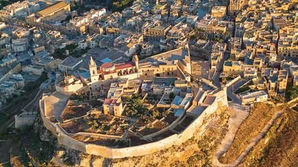
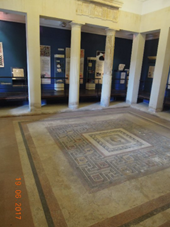
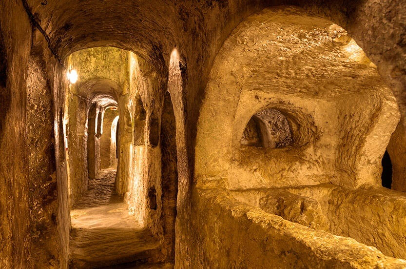
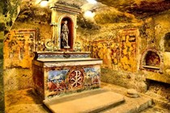

Situata nella regione centro-occidentale di Malta, Rabat è una delle città storicamente più importanti che si possano trovare a Malta.
Innanzitutto, Rabat è considerata da molti la culla del cristianesimo a Malta. La ragione di ciò è che, molti credono che Rabat fosse il luogo di residenza di San Paolo durante i suoi tre mesi di soggiorno a Malta (dove il luogo specifico in cui soggiornò, è noto come "Grotta di San Paolo, che oggi è disponibile per il grande pubblico ). Per non parlare del fatto che Rabat contiene un certo numero di catacombe (tra cui le Catacombe di San Paolo e le Catacombe di Sant'Agata), che furono costruite durante il controllo italiano su Malta.
Malta è stata anche sotto il controllo degli arabi per più di 200 anni (dall'870 d.C. al 1090 d.C.). Ciò è stato particolarmente evidente nel caso di Rabat a causa del fatto che Rabat ha subito un'espansione della terra, a causa del fatto che la sua vicina città di Mdina ha ridimensionato le sue mura.

Al giorno d'oggi, con oltre undicimila persone che vivono a Rabat, questa città è più di un semplice racconto storico, ma ha molte cose da fare ed esplorare!
Musei
Catacombe
Wignacourt Museum
Il Museo Wignacourt fungeva in passato da dimora per i membri del clero dell'ordine di San Giovanni. L'edificio stesso è stato costruito nel XVIII secolo, la sua architettura trae grande ispirazione dall'epoca barocca.
Prende il nome dal Gran Maestro Alof de Wignacourt (che regnò su Malta dal 1601 al 1622 d.C.), il museo è suddiviso in tre livelli.
Il livello sotterraneo è di grande interesse per molti per la sua importanza storica nel corso dei secoli. In primo luogo, questo livello è collegato alla Grotta di San Paolo, dove lo stesso San Paolo risiedette durante il suo soggiorno a Malta (60 d.C.). In secondo luogo, gli ipogei al suo interno (di natura punica, romana e cristiana) furono usati come rifugi antiaerei durante la seconda guerra mondiale.
Il piano terra è costituito da alcune raccolte minori, oltre al grande giardino che un tempo ospitava al suo interno la mensa dei membri del clero.
Il primo piano è lo spazio espositivo principale, dove si possono trovare numerosi dipinti realizzati da artisti europei e maltesi (come Mattia Preti e Antoine Favray), oltre a una collezione di argenti spagnoli, italiani e maltesi che vanno dal XVII al diciannovesimo secolo.
Domus Romana
La Domus Romana (o Domvs Romana) era originariamente una residenza in stile romanico per un nobile romano. La residenza stessa fu costruita nel I secolo aC, e rimase in uso fino al II secolo dC (circa 300 anni).
Tuttavia, le cose presero una brutta piega per la casa romana. Ciò era dovuto principalmente al fatto che nel corso dell'XI secolo fu allestito un cimitero musulmano nello stesso luogo in cui sorgevano i resti della dimora romana.
Di conseguenza, la riscoperta della Domus Romana nel 1881 non ha prodotto molti reperti. In effetti, l'attrazione principale di questi resti erano i mosaici in stile ellenistico che servivano per la decorazione e raffiguravano scene mitologiche. Altri manufatti portati alla luce includevano monete, stoviglie e accessori per il bagno.

Dal 1882 questo sito storico è stato messo a disposizione del grande pubblico sotto forma di museo. Uno dei motivi per cui il museo è stato istituito in primo luogo è stato perché i mosaici potessero essere meglio conservati.

Saint Pauls Catacombs
Le Catacombe di San Paolo sono uno dei siti storici più importanti di Malta quando si parla di archeologia cristiana.
Queste catacombe fungevano già dal III secolo come luogo di sepoltura per il popolo punico e romano dell'epoca, fino all'VIII secolo.
L'area principale del sito è costituita da numerose tombe e passaggi interconnessi, che coprono un'area superiore ai duemila metri quadrati. Questo rende le Catacombe di Saint Paul la più grande catacomba scoperta finora a Malta.
Tra le numerose tipologie di sepoltura che si possono trovare all'interno di questa rete, la tipologia funeraria più prevalente è quella delle tombe a baldacchino, che influenzano notevolmente i corridoi principali di questa rete. Queste tombe di questo tipo avevano quattro pilastri di supporto, che formavano archi su ogni lato della tomba.
Infine, queste catacombe sono piene di illustrazioni e messaggi scritti con vernice rossa.

Saint Agatha's Catacombs
Risalenti al III secolo, le Catacombe di Sant'Agata erano utilizzate come cimiteri sotterranei per pagani, ebrei e cristiani, ciascuno con le proprie sezioni designate.
Mentre le Catacombe di San Paolo affermano di essere le più grandi catacombe trovate a Malta, questo è vero solo se si considera l'area accessibile al pubblico in generale. In effetti, le Catacombe di Sant'Agata sono grandi il doppio delle Catacombe di San Paolo, ma molte sezioni contenenti affreschi murali sono state chiuse per evitare di danneggiarle.
Tuttavia, alcune sezioni contenenti murales leggermente incompleti/disconnessi sono ancora disponibili per il pubblico in generale.
Tra le numerose tipologie di tombe che si possono incontrare all'interno delle Catacombe di Sant'Agata, una delle tipologie più importanti è quella della "tavola a baldacchino con dorso a sella". Tale tomba avrebbe la sua parte superiore a forma di dorso di una sella e avrebbe anche un baldacchino (un coperchio sospeso sulla tomba) che sarebbe sostenuto da quattro pilastri.